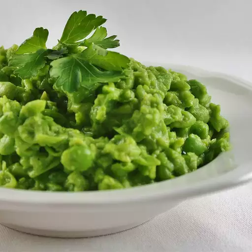

Mushy Peas

Homemade Mushy Peas
This is Fred Flintstone's mushy peas. It is not hard to make. It is so easy a caveman could make it.
Ingredients
- 1 (10 ounce) package frozen peas
- 1/4 cup heavy cream
- 1 tablespoon butter
- 1/2 teaspoon salt
- 1/2 teaspoon freshly ground black pepper
Steps
- Bring a shallow pot of lightly salted water to a boil over medium heat. Add frozen peas, and cook for 3 minutes, or until tender.
- Drain peas, and transfer to a blender. Add cream, butter and salt, and pepper, and process until blended, but still thick with small peices of peas.
- Adjust seasonings to taste, and serve immediately